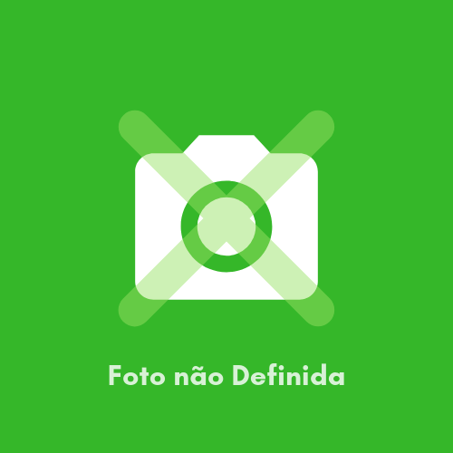

<!--
  Generated template for the TimePage page.

  See http://ionicframework.com/docs/components/#navigation for more info on
  Ionic pages and navigation.
-->
<ion-header>

  <ion-navbar color="primary">
    <ion-title>Time</ion-title>
    <button ion-button menuToggle>
      <ion-icon name="menu"></ion-icon>
    </button>
  </ion-navbar>

</ion-header>


<ion-content padding>
  <ion-list>
    <ion-item (click)="OpenTimedetalhes(Times.key, Times.nome, Times.descricao, 
    Times.goltit ,Times.golres, Times.fixotit, Times.fixores, Times.aladtit, Times.aladres,
    Times.alaetit, Times.aleres, Times.pivotit, Times.pivores)" *ngFor="let Times of Times | async"> 
      <ion-avatar item-start>
        
      </ion-avatar>
      <h2>{{ Times.nome }}</h2>
      <p>{{ Times.descricao }}</p>
    </ion-item>  
    <ion-item >
      <h2></h2>
      <p></p>
    </ion-item>  
  </ion-list>
</ion-content>
